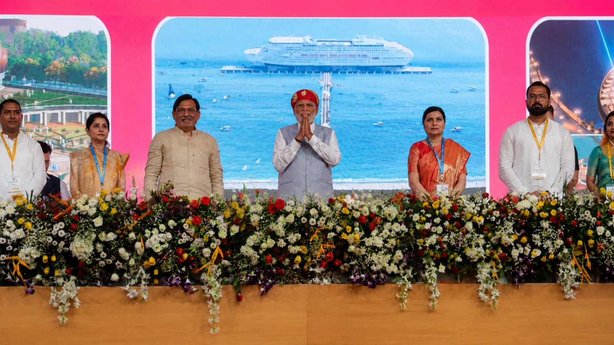

PM emphasizes the Goverment's efforts to further women-led devolopment across divorced sectors
12jun,2026
Prime Minister Shri Narendra Modi today stated that over the last 12 years, the Government has worked to further women-led development, which is visible across sectors.

PM expresse sadness over the passing of shri jaspal Rana ji
12 jun,2026
Prime Minister Shri Narendra Modi today expressed deep sadness over the passing of Shri Jaspal Rana Ji. The Prime Minister noted that his passing is a profound loss to the world of Indian sports.

Chief Minister of Uttar Pradesh meets PM
11 jun,2026
Chief Minister of Uttar Pradesh, Shri Yogi Adityanath met Prime Minister, Shri Narendra Modi today in New Delhi.

Chief Minister of Tamilnadu
11 jun,2026
Chief Minister of Tamil Nadu, Thiru C. Joseph Vijay met Prime Minister, Shri Narendra Modi today in New Delhi.


Governance
Track Record
Our Mantra should be: ‘Beta Beti, Ek Samaan’ "Let us celebrate the birth of the girl child. We should be equally proud of our daughters. I urge you to sow five plants when your daughter is born to celebrate the occasion." -PM Narendra Modi to citizens of his adopted village Jayapur. Beti Bachao Beti Padhao (BBBP) was launched by the Prime Minister on 22nd January, 2015 at Panipat, Haryana. BBBP addresses the declining Child Sex Ratio (CSR) and related issues of women empowerment over a life-cycle continuum. It is a tri-ministerial effort of Ministries of Women and Child Development, Health & Family ...


PM'S Profile
Shri Narendra Modi was sworn-in as India’s Prime Minister for the third time on 9th June 2024, following another decisive victory in the 2024 Parliamentary elections. This victory marked the third consecutive term for Shri Modi, further solidifying his leadership. The 2024 elections saw a remarkable voter turnout, with a significant portion of the electorate showing continued confidence in Shri Modi’s leadership and vision for the country. His campaign focused on a blend of economic development, national security, and social welfare programs, which resonated widely with the populace. Shri Modi's third term is expected to build on the foundations laid during his
Interact with PM


Our Government

The President of India

Rajya Sabha

Lok Sabha

The Cabinet Secretariat

My Gov

Goi Web Directory

Press Information Bureau

National portal of India